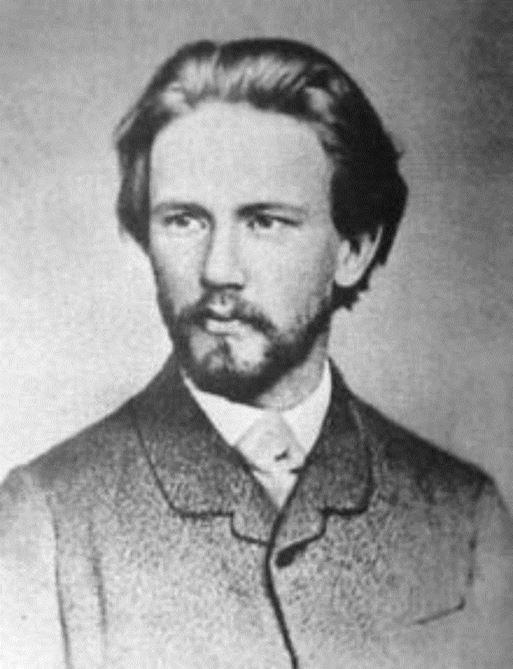

Tous les catholiques français chantent leur Notre-Père sur la musique du compositeur orthodoxe Rimski-Korsakov (beaucoup plus lente dans l’original, encore plus recueillie, comme intemporelle), mais l’œuvre du créateur de Shéhérazade est naturellement bien plus considérable. Animateur-phare du « Groupe des Cinq » (pour mémoire, les quatre autres étant Balakirev, Borodine, Cui et Moussorgski), il est certainement le plus professionnel de tous, Borodine étant médecin, Cui officier, Moussorgski gratte-papier ; c’est aussi le plus compétent du point de vue de la technique de composition, au point d’harmoniser des œuvres de son protégé, Moussorgski.
Professeur au Conservatoire de Saint-Pétersbourg, il n’a pas hésité à révéler que, dans son esprit, les tonalités avaient une couleur : Do-blanc, Ré-jaune, Mi-bleu, Fa-vert… Qu’en penser ?
L’idée n’était pas absolument originale : en France, Baudelaire prétendait que « les parfums, les sons et les couleurs se répondent » (Correspondances, 1857) ; à la génération suivante (1871), Rimbaud écrivait son Sonnet des voyelles : « A-noir, E-blanc, I-rouge, U-vert, O-bleu » … Plus près de nous (certes non par le génie, mais par la seule proximité du XXe siècle), Messiaen attribuait lui aussi des couleurs aux sons. Et c’est en effet tentant d’imaginer une sorte d’univers esthétique total, surgissant d’un œuf primordial d’où procéderait la beauté.
En réalité, l’art ne se comprend qu’en fonction de nos sens physiques : dans notre œil, les cônes et les bâtonnets sont le médium de la perception ; dans notre oreille et au-delà, vers la zone corticale, c’est notre corps qui nous informe ; or notre corps ne mélange pas les couleurs et les sons. De fait, chaque art dispose de son propre sanctuaire à l’intérieur duquel on honore la beauté tout autant qu’on la crée soi-même. Par exemple, le surréalisme avait un sens en peinture, qui a son propre langage, mais il échoue en poésie, parce que la poésie est soumise à des contraintes naturelles du discours articulé – sonore ou implicitement sonore - sans quoi elle sombre dans une distorsion de la pensée et du langage qui évoque la schizophrénie.
Pas plus que la schizophrénie, la synesthésie n’est un don, mais une affection physique – certes infiniment moins grave ! - pour ne pas dire une maladie, faisant penser au daltonisme. Ce n’est que par commodité de langage, ou par recours à l’analogie – mais l’analogie n’est pas l’équivalence – que l’on parle de « tons » en peinture ou de « couleur » d’un accord : au sens scientifique du terme, un accord n’a pas de couleur. Le mystère de l’art (car notre capacité à créer reste un mystère pour le philosophe) ne peut pas être abordé autrement que par une approche rigoureusement anthropologique : qu’est-ce qu’un homme, comment est-il fait ; qu’est-ce qu’un son, sinon d’abord une vibration de molécules d’air, et comment un homme, qui est matière, accueille cette autre matière qu’est le son, en vertu du principe énoncé par Empédocle : « seul le même connaît le même »…
Le mystère de l’art, lui, est ailleurs, dans le fait que l’homme est créé à la ressemblance de Dieu : mais là, ce n’est plus le philosophe qui parle, c’est le croyant. De même, le mélomane se moque bien de savoir si Rimski-Korsakov avait raison ou tort scientifiquement parlant, du moment que ses oreilles et son esprit pourront goûter à ces sons qu’il a su assembler avec un si grand talent.
Partager cette page